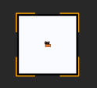
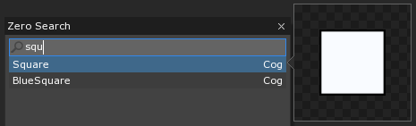
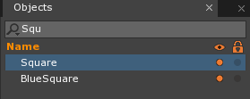
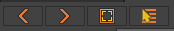
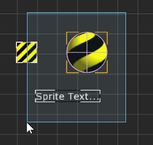
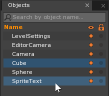
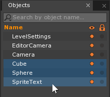

Selecting an Object
When an object is selected it allows you to perform extra functions on it, such as Copy or Cut, or view its properties in the Properties Window. This is done in one of three ways:
- Click on the object in the Level Window

Notice orange outline around selected object
- Search for the object by name in the Search Window

Notice the term Cog is used to describe it
- Click on the object in the Objects Window

When an object has recently been selected, you may also select it via the navigation bar in the Properties Window using the arrows or Recent button:

Selecting Multiple Objects
You may also select more than one object at the same time. With multiple objects selected, you may Copy or Cut them all simultaneously, or view and edit the properties on any components that they all share. Multi-selecting may be done in three different ways:
Click the Left Mouse Button in the Level Window and Drag over all the objects you wish to select

Hold the Ctrl key and click on the objects individually in the Objects Window

Hold the Shift key and click on the first and last objects in a desired range in the Objects Window
